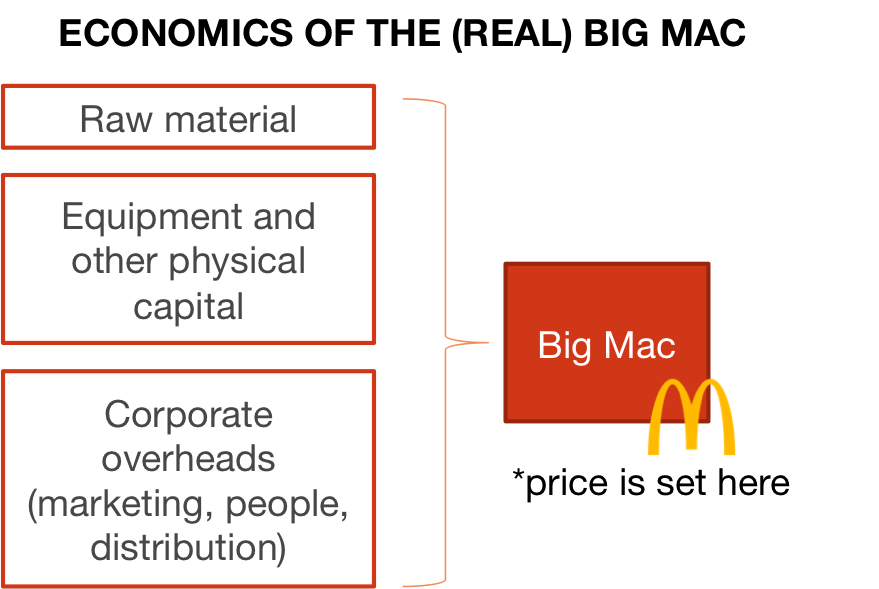
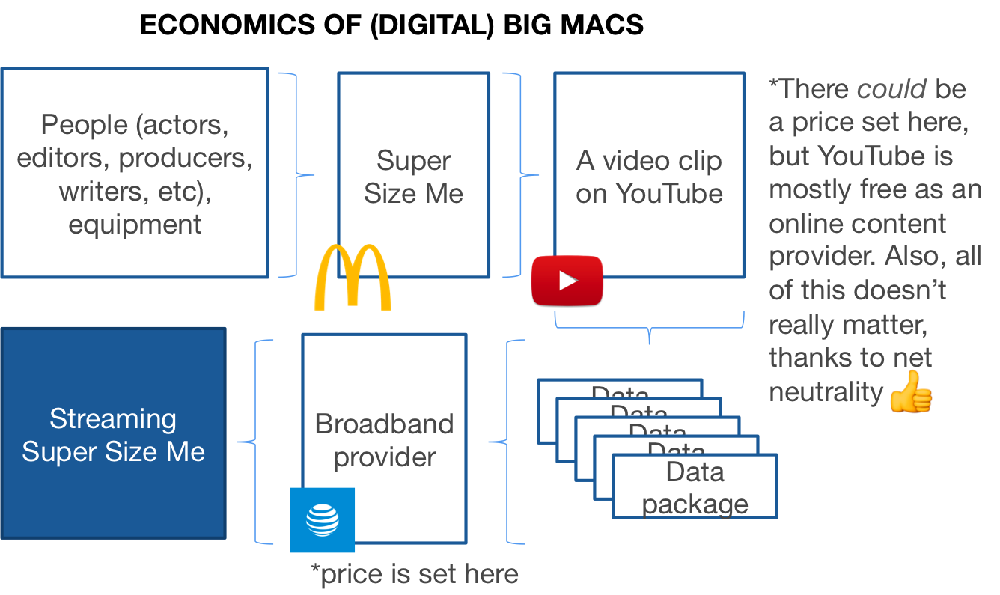

Four billion people in the world are still unconnected to the internet, and for many people coming online for the first time, it will be through a mobile device. While the actual devices, with their broad range of features, quality and manufacturers, have become affordable for the many, access to data remains to be the biggest barrier for new internet users.
Since 1986, The Economist has been publishing what they call the “Big Mac index”. By comparing at the average prices of the Big Mac in different countries’ McDonald locations, and using market exchange rates, the index shows in which countries the Big Mac is overvalued or undervalued. In a light-hearted way, it tests the purchasing-power parity theory, which says that eventually exchange rates should move towards the rate that would equalise the prices of an identical basket of goods and services in any two countries. For our index above, we compare the prices of digitally consuming a 60-s video clip of a Big Mac in countries around the world.
As the graphic below shows, the value chain of a digital media product is much more complex. The content creator (which we could say is McDonalds since they either produced it in-house or paid an agency to do so) has very little to do with the pricing.


In the end, the consumer pays for the data that they are streaming, which has nothing to do with the content that they are actually consuming. But even for the specific quantity and quality of data—an identical basket of goods and services—there are many providers that offer this at different prices even in a single neighborhood, city and country.
Those who have been following the net neutrality debate would know that most rich countries have decided to regulate the internet as a public utility. For rest of the world, the UN in 2011 declared internet access a basic human right.
Despite the general consensus that the internet should be accessible and affordable for all, mobile-broadband is twice as expensive in developing countries than in developed countries. Pricing for the same amount of data can ranges from XX to XX.